LAM · LAL · Diagnostic · Urgences · Traitement
M. P., 29 ans, consulte aux urgences pour fièvre (39°C), fatigue intense, saignements des gencives depuis 3 jours.
Bilan révèle :
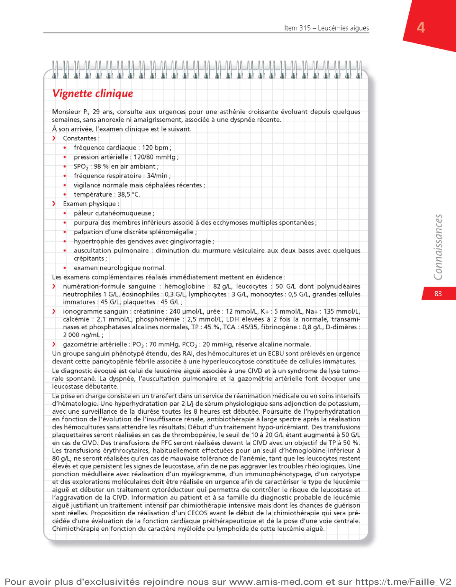
Blastes · Incidence · Facteurs de risque
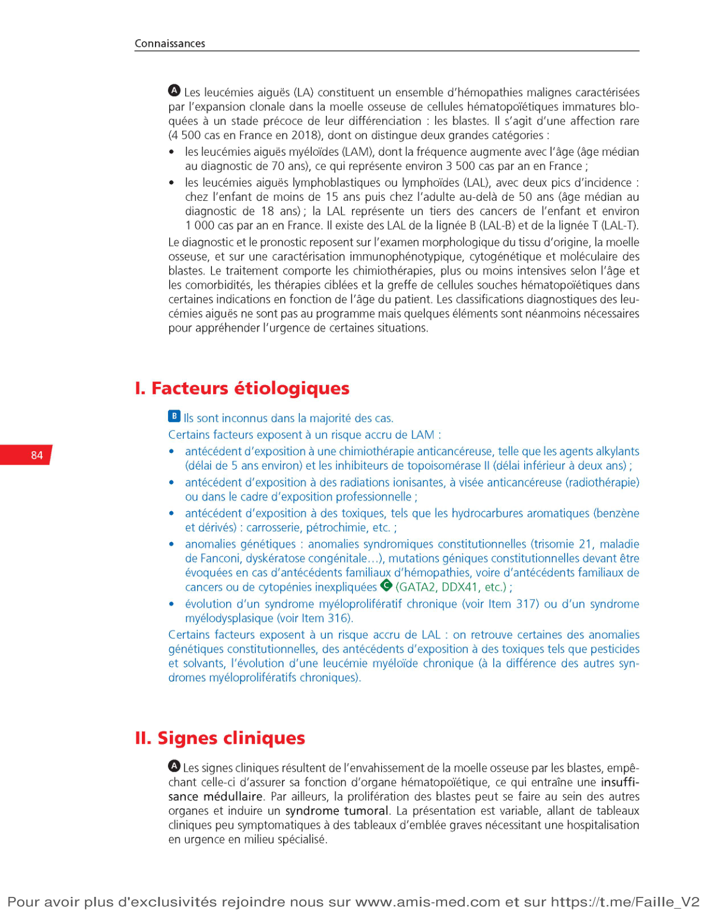
Insuffisance médullaire · Syndrome tumoral · Leucostase
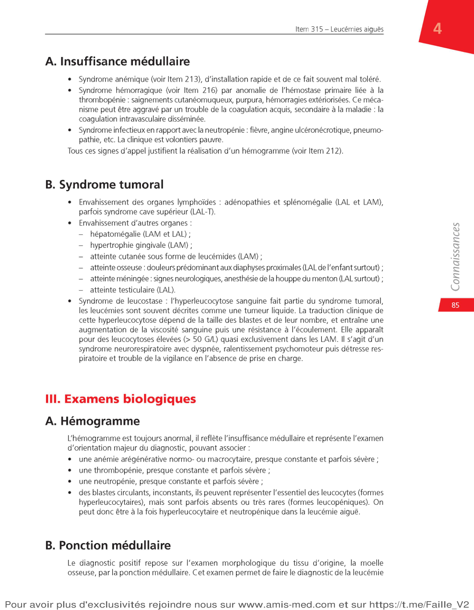
NFS · Myélogramme · Cytogénétique · Bilan de coagulation
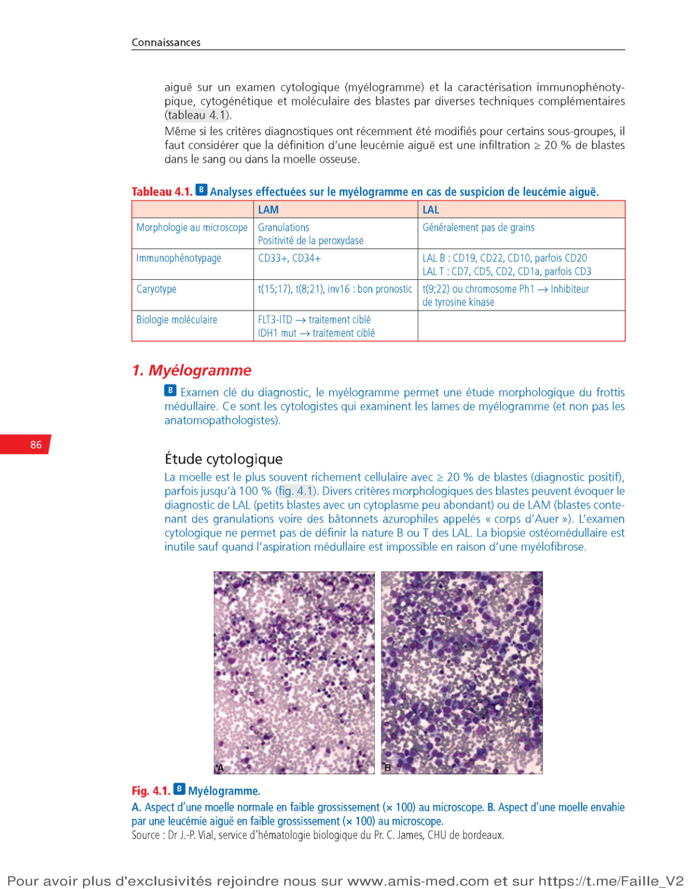
| Marqueur | Lignée |
|---|---|
| CD33, CD13, CD117 | Myéloïde (LAM) |
| CD19, CD10, CD20, TdT | B (LAL-B) |
| CD3, CD7, CD2, TdT | T (LAL-T) |
| CD34 | Cellule souche (toutes LA) |
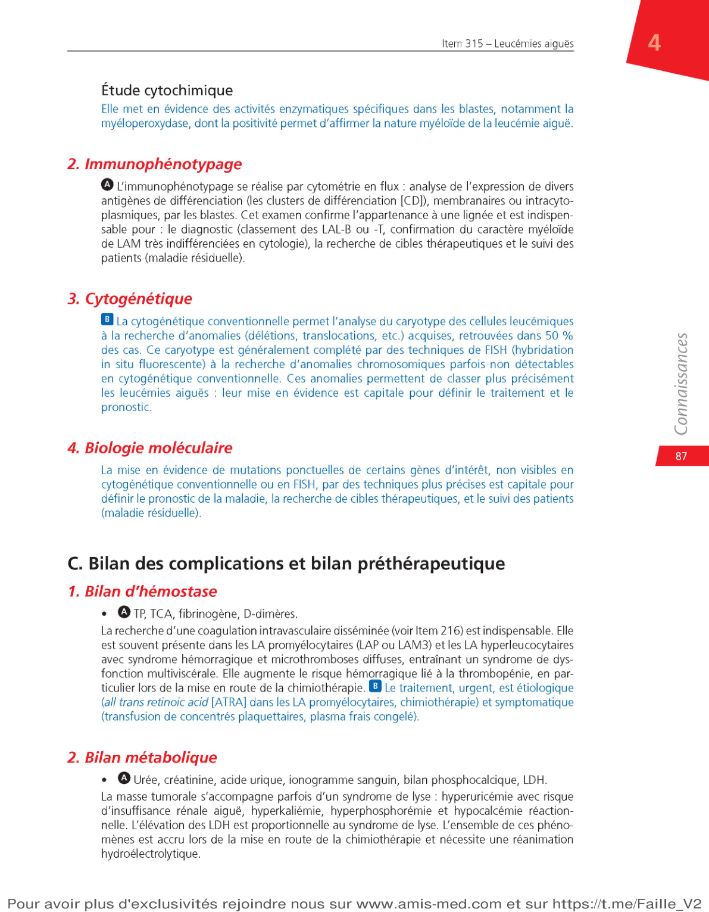
Avant tout traitement, bilan complet obligatoire :
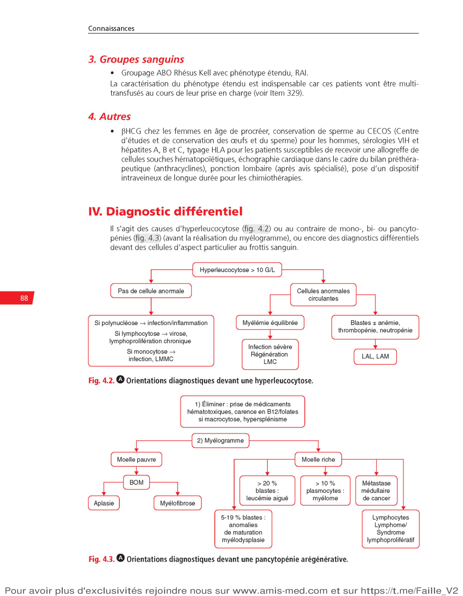
FAB · LAP urgence · LAL · Chromosome Philadelphie · Pédiatrie
| Sous-type FAB | Morphologie | Particularité |
|---|---|---|
| LAM0 | Indifférenciée | MPO- |
| LAM1 | Myéloblastique peu différenciée | MPO+ |
| LAM2 | Myéloblastique différenciée | Corps d'Auer, t(8;21) |
| LAM3 / LAP | Promyélocytaire | t(15;17), CIVD, ATRA +++ |
| LAM4 | Myélomonocytaire | Éosinophiles, inv(16) |
| LAM5 | Monoblastique | Gencives, peau, méninges |
| LAM6 | Érythroleucocytaire | Rare |
| LAM7 | Mégacaryoblastique | Trisomie 21 +++ |
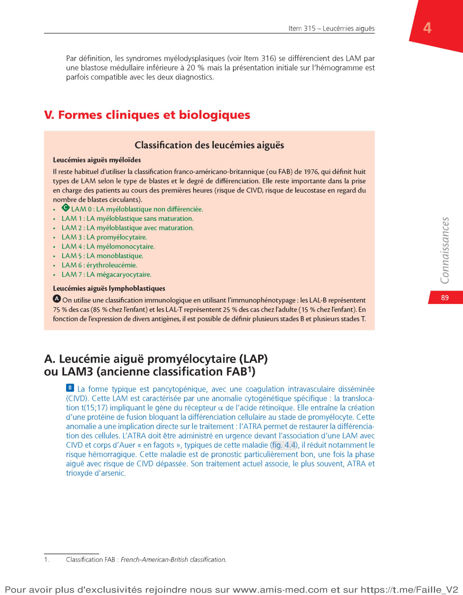
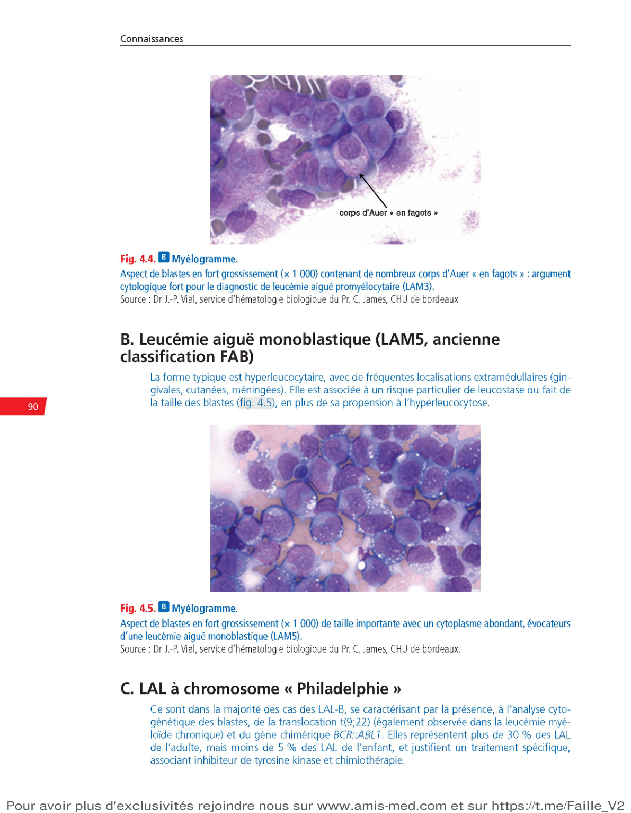
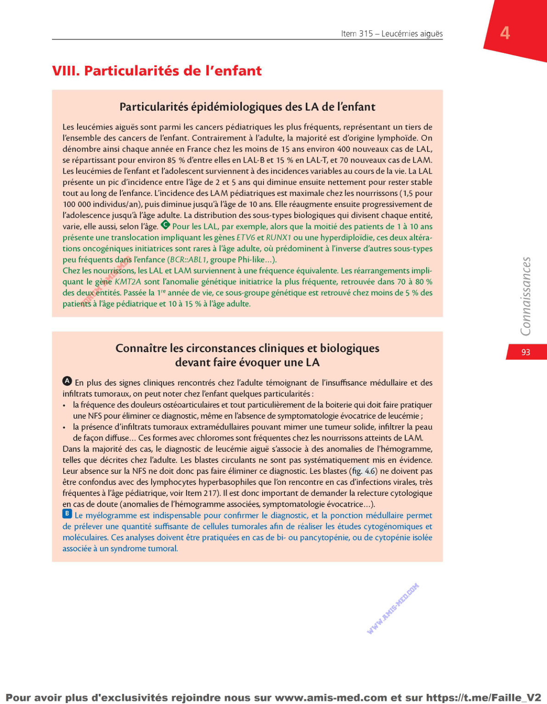
Urgences · Induction · Consolidation · Allogreffe · Résultats
Avant la chimiothérapie, stabiliser le patient :
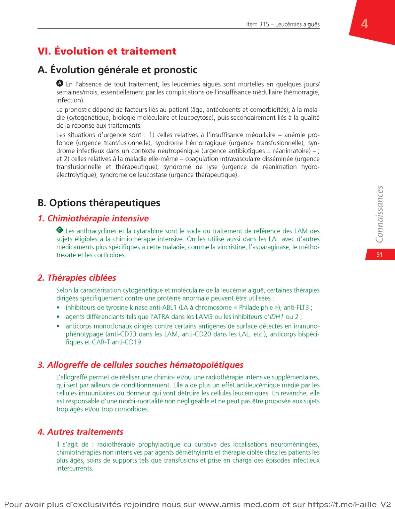
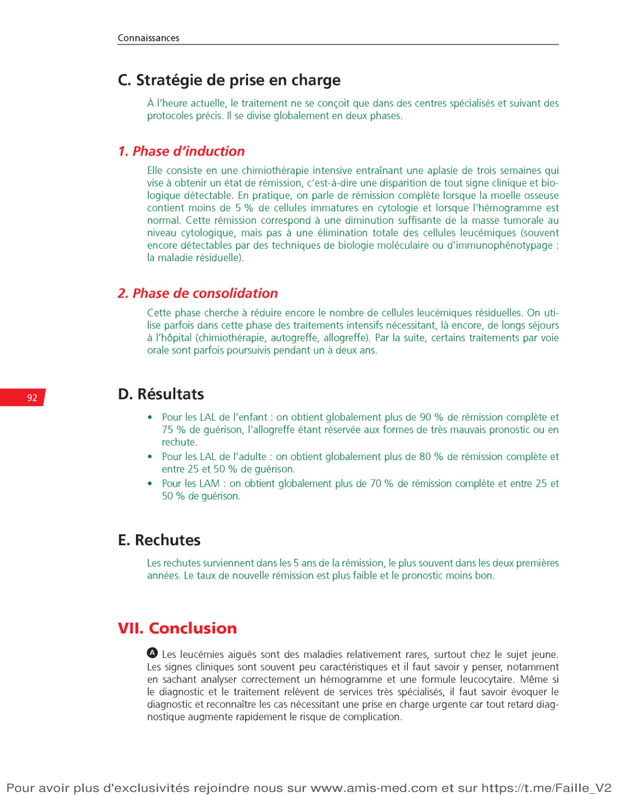
Les thérapies ciblées ont révolutionné le traitement des LA :
| Type | Taux de RC | Guérison |
|---|---|---|
| LAL enfant | 90–95% | 75–80% |
| LAL adulte | 80% | 25–50% |
| LAL Ph+ (avec ITK) | 80–90% | 40–60% (allogreffe) |
| LAM de bon pronostic | 80% | 50–70% |
| LAM intermédiaire/mauvais | 60–70% | 20–35% |
| LAP (ATRA + ATO) | >95% | >90% |
| LAM sujet âgé (>75 ans) | 50–60% | 5–15% |
| Aspect | Essentiel à retenir |
|---|---|
| Définition | ≥ 20% blastes moelle (sauf t(15;17), t(8;21), inv(16)) |
| Urgence vitale | Sans traitement : décès en jours-semaines |
| LAP = urgence #1 | t(15;17), CIVD, ATRA IMMÉDIAT dès suspicion |
| Leucostase | GB > 50-100 G/L → CI aux CGR → chimio urgente |
| CIVD | Fibrinogène ↓, D-dimères ↑, TP allongé → corriger |
| Syndrome de lyse | K+ ↑, uricémie ↑ → hyperhydratation + rasburicase |
| Myélogramme | Obligatoire : blastes + MPO + immunophéno + cytogénétique |
| Meilleur pronostic | LAP (ATRA+ATO) >90% guérison · LAL enfant ~75% |
| Allogreffe | Mauvais pronostic, LAL adulte → typage HLA dès J1 |
Vous avez complété le cours sur les Leucémies Aiguës — Item 315